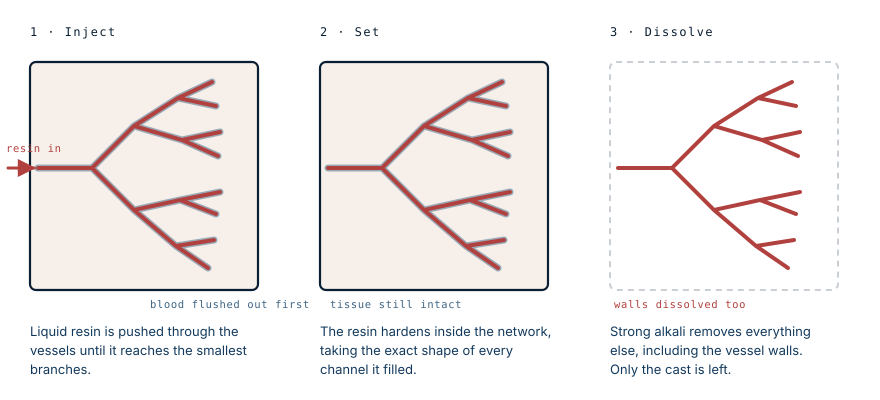

You are not looking at blood vessels
The human figure in the display case, made of nothing but a red tangle, is usually described as a body's blood vessels. It is not. The vessels were dissolved along with the muscle, the bone and everything else. What survived is the shape of the space that used to be inside them.
How it is made
The blood is flushed out first, usually with a saline solution, because a single clot will block the resin and leave an entire territory empty.
Then liquid resin is pushed in under pressure. The viscosity is adjusted deliberately: thinner resin travels further into the smallest branches, thicker resin stops sooner. That choice determines how fine the finished cast will be, down to vessels a few thousandths of a millimetre across.

Once the resin has set, the specimen goes into a strong alkali — potassium or sodium hydroxide — for days. This dissolves the tissue. It also dissolves the vessel walls, because those walls are tissue too.
That is the detail that changes what the object is. The red network is not a preserved circulatory system. It is a negative: the solidified shape of the empty space that blood used to occupy.
Why it still looks like a person
The obvious question about the figure is why it holds a human shape when everything structural has been removed.
The answer is that almost no living cell in the body sits more than a fraction of a millimetre from a capillary. Oxygen diffuses only a very short distance through tissue, so any cell further away than that dies. The vascular network therefore has to reach essentially everywhere a body has living tissue — which means the network's shape and the body's shape are close to the same thing.
The cast keeps the outline of a person because the blood supply already was, in a sense, an outline of a person.
The gaps are the interesting part
Where the cast is empty, it is telling you something.
A few tissues in the body have no blood supply at all and survive by diffusion from their surroundings. The clear window at the front of the eye is one: it is kept alive and transparent by the tear film and the fluid behind it, which is exactly why losing your eyelids can cost you your sight while the eye itself stays healthy. The lens is another. So is the cartilage lining a joint, and the outer layer of the skin.
Those structures leave holes in a corrosion cast, and the holes are as informative as the branches. They mark the parts of the body that solved their supply problem some other way.
The same principle appears in a much less pleasant setting. When a fungus or a clot blocks the vessels feeding a region, everything downstream is cut off, and a drug carried in the blood cannot reach it either. A corrosion cast is the same map, made deliberately.
What it is actually used for
Museum figures are the visible end of a working laboratory technique. Corrosion casting has been used for decades to study microcirculation, usually followed by scanning electron microscopy, and it answers questions that imaging a living patient cannot.
It shows how tumours build their own blood supply, how the vessels of a diseased liver reorganise under pressure, and how the microvasculature of an organ is arranged before and after injury. Casts have even been used to calculate the mechanical forces that blood exerts on vessel walls, by feeding the recovered geometry into fluid dynamics models.
Its main limitation follows directly from the method: since the walls are destroyed, a cast tells you the shape of the channel and nothing about the tissue that formed it.
Whose body it is
These specimens come from donated human bodies, and that fact deserves more than a footnote.
Anatomical donation programmes at universities and medical schools operate under documented consent, with clear records of provenance. Public exhibitions of preserved bodies are a different matter: some have faced sustained questions about where specimens came from and whether the people concerned genuinely consented. Those questions have not always been satisfactorily answered.
It is reasonable to find a corrosion cast fascinating. It is also reasonable to ask, when you meet one in a ticketed exhibition, whose body it was and what they agreed to. Both responses can be held at once, and the second one is the reason donation programmes keep the records they keep.
What this case teaches
The object is a negative, not a specimen. Resin fills the channels, the alkali removes everything organic including the vessel walls, and what is left is the solidified shape of the space blood used to occupy. It keeps the outline of a person because no living cell can sit far from a capillary, so the vascular network is already a rough map of the body. And the empty regions in the cast mark the few tissues that get no blood at all — the cornea, the lens, joint cartilage — which is the same reason those tissues fail in such particular ways when something goes wrong.